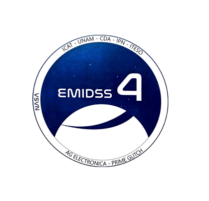

StratoLab
El laboratorio virtual de diseño de misiones suborbitales tiene como principal objetivo servir como plataforma de información para aquellos interesados en incursionar en el campo aeroespacial, a traves de la implementación de vuelos impulsados por globos estratosfericos, que permiten realizar ensayos en ambiente de espacio cercano. El laboratorio está integrado por tres secciones: Cálculo de las caracteristicas del globo, Cálculo de las caracteristicas de seleccion del globo, Cálculo para la predicción de trayectoria del globo y seguimiento en tiempo real del globo

|
 |